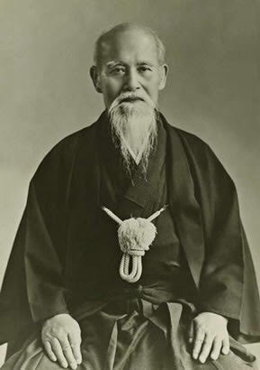

History
What is Aikido
Aikido is a powerful system of self-defense that blends with the energy of your opponent to render their attacks harmless.Through regular practice, adults may use Aikido as a means to enhance and maintain their health and flexibility. In addition, children are taught self-discipline and the virtues of respecting themselves and others. Through the harmony and balance of circular blending movements, Aikido aims to unite the spirit and body of each practitioner. The achievement of this goal can be accomplished only through the accumulation of the experience gained through sincere daily practice. Since Aikido has as its base the rigorous strictness of the traditional martial arts of Japan, each technique includes all the elements of offense and defense. Since competition often raises negative emotional qualities that are contrary to the harmonious spirit of Aikido, we offer regularly scheduled non-compulsory testing evaluations for those students who desire to advance in rank. These testing sessions are based on a nationally recognized series of guidelines and requirements developed by T.K. Chiba, Shihan and ensure the strong transmission of O Sensei's Aikido throughout the world. In Aikido, men and women of all ages cooperate in daily practice aimed at making the mind and body become more harmonious with nature. Because of its great versatility, Aikido may be practiced by both young and old as a martial art for self-defense as well as a method of physical and spiritual training.
History of Aikido

Aikido developed from Japanese Bujutsu (“warrior skills”) which emerged over a thousand years ago.Master Morihei Ueshiba (1883-1969), founder of Aikido, studied various bujutsu, including Kito-ryu, Yagyu-ryu and Daito-ryu jujutsu, mastering the secrets of each.
He also trained himself under Onisaburo Deguchi, an outstanding religious leader of his time. Known to his followers with reverent affection as O Sensei, Ueshiba began teaching in a dojo near Kyoto and named his art Aiki Budo.
He later moved to Tokyo, establishing what became the Headquarters Dojo. In 1942, the name of the art was changed to Aikido. After World War II, O Sensei's Aikido spread rapidly through the international martial art community, establishing itself in the United States in the early 1960s.
When O Sensei died in 1969, his son Kisshomaru became Doshu (Master) succeeding his father in the traditional Japanese manner. Upon the death of Ueshiba Kisshomaru Sensei in early 1999, his son Moriteru has assumed the title Doshu, becoming the third member of the family to lead the Aikido community.
Chiba Shihan, is a direct student of the founder, and has been instrumental in the growth of Aikido within Great Britain, the European Continent, and America.
The Art of Peace begins with you. Work on yourself and your appointed task in the Art of Peace. Everyone has a spirit that can be trained in some manner, a suitable path to follow. You are here for no other purpose than to realize your inner divinity and manifest your innate enlightenment. Foster peace in
your own life and then apply the Art to all that you encounter.
—O'Sensei